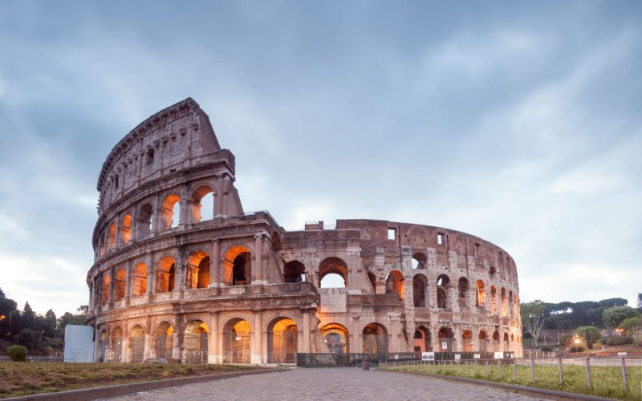
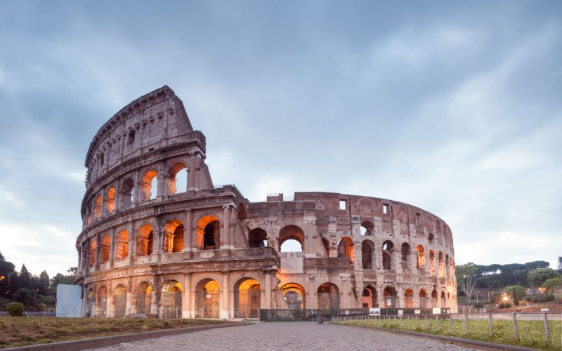

ROMA DONDE LA HISTORIA ABRAZA EL PRESENTE
Roma es una ciudad, capital de la región del Lacio y de Italia. Con una población de 2 857 321 habitantes, es el municipio más poblado de Italia y la tercera ciudad más poblada de la Unión Europea. Por antonomasia, se le conoce desde la Antigüedad como la Urbe (Urbs). También es llamada «La Ciudad Eterna» (en italiano: Città Eterna).
Es la ciudad con la más alta concentración de bienes históricos y arquitectónicos del mundo; su centro histórico delimitado por el perímetro que marcan las murallas aurelianas, superposición de huellas de tres milenios, es la máxima expresión del patrimonio histórico, artístico y cultural del mundo occidental. En 1980, junto a las propiedades extraterritoriales de la Santa Sede que se encuentran en la ciudad y la basílica de San Pablo Extramuros, fue incluida en la lista del Patrimonio de la Humanidad de la Unesco
 

Actividades imprescindibles check_circle
- Visitar el Coliseo: Este icónico anfiteatro es una maravilla de la arquitectura romana. No te pierdas una visita guiada para conocer su historia.
- Explorar el Vaticano: Admira la Basílica de San Pedro y la Capilla Sixtina. Asegúrate de reservar con antelación para evitar largas colas.
- Pasear por el Foro Romano: Camina entre las ruinas de lo que fue el corazón de la vida política y social de la antigua Roma. La historia está en cada esquina.
- Tirar una moneda en la Fontana di Trevi: Esta espectacular fuente es famosa por su belleza. Según la tradición, tirar una moneda asegura tu regreso a Roma.
- Disfrutar de la gastronomía local: No te vayas sin probar platos típicos como la pasta alla carbonara y el gelato. Un recorrido gastronómico por Trastevere es una excelente opción.
PRECIO DEL VIAJE
600€
Vuelo y alojamiento incluidos